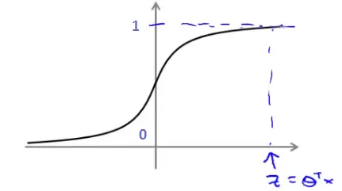
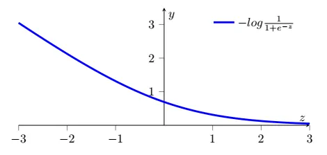
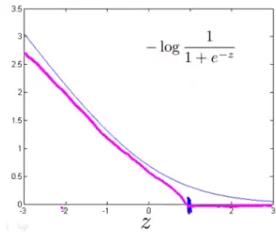
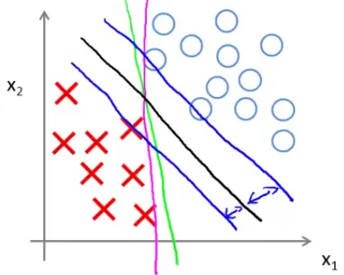
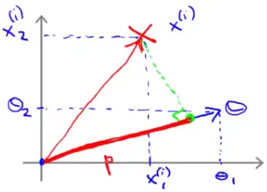
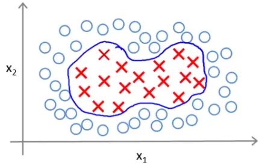
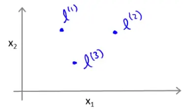
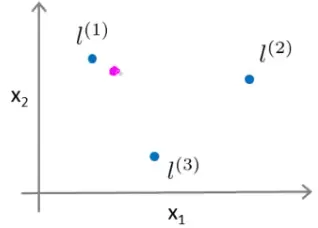

Support Vector Machines (SVMs) are powerful tools in machine learning, and their formulation can be derived from logistic regression cost functions. This article delves into the mathematical underpinnings of SVMs, starting with logistic regression and transitioning to the SVM framework.
Logistic regression employs a hypothesis function defined as:
$$h_{\theta}(x) = \frac{1}{1 + e^{-\theta^T x}}$$
This function outputs the probability of $y = 1$ given $x$ and parameter $\theta$.

For a given example where $y = 1$, ideally, $h_{\theta}(x)$ should be close to 1. The cost function for logistic regression is:
$$\text{Cost}(h_{\theta}(x), y) = -y \log(h_{\theta}(x)) - (1 - y) \log(1 - h_{\theta}(x))$$

When integrated over all samples, this becomes:
$$J(\theta) = -\frac{1}{m} \sum_{i=1}^{m}[y^{(i)}\log(h_{\theta}(x^{(i)})) + (1 - y^{(i)})\log(1 - h_{\theta}(x^{(i)}))]$$
This cost function penalizes incorrect predictions, with the penalty increasing exponentially as the prediction diverges from the true value.
SVMs modify this logistic cost function to a piecewise linear form. The idea is to use two functions, $cost_1(\theta^T x)$ for $y=1$ and $cost_0(\theta^T x)$ for $y=0$. These functions are linear approximations of the logistic function's cost. The SVM cost function becomes:
$$J(\theta) = C \sum_{i=1}^{m}[y^{(i)} cost_1(\theta^T x^{(i)}) + (1 - y^{(i)}) cost_0(\theta^T x^{(i)})] + \frac{1}{2} \sum_{j=1}^{m} \theta_j^2$$
The parameter $C$ plays a crucial role in SVMs. It balances the trade-off between the smoothness of the decision boundary and classifying the training points correctly.

Support Vector Machines (SVMs) are designed to find a decision boundary not just to separate the classes, but to do so with the largest possible margin. This large margin intuition is key to understanding SVMs.

When we talk about SVMs, we often refer to minimizing a function of the form CA + B. Let's break this down:
C to be very large, we prioritize minimizing these errors. In other words, if C is large, we aim to make A equal to zero. For this to happen:y = 1, we need to find a $\theta$ such that $\theta^Tx \geq 1`.y = 0, we need to find a $\theta$ such that $\theta^Tx \leq -1`.$$ \begin{aligned} \text{minimize}\ \frac{1}{2} \sum_{j=1}^{m} \theta_j^2 \\ \text{subject to}\ \theta^Tx^{(i)} \geq 1\ \text{if}\ y^{(i)}=1 \\ \theta^Tx^{(i)} \leq -1\ \text{if}\ y^{(i)}=0 \end{aligned} $$
In the visualization, the green and magenta lines are potential decision boundaries that might be chosen by a method like logistic regression. However, these lines might not generalize well to new data. The black line, chosen by the SVM, represents a stronger separator. It is chosen because it maximizes the margin, the minimum distance to any of the training samples.
Assuming we have only two features and $\theta_0 = 0$, we can rewrite the minimization of B as:
$$\frac{1}{2}(\theta_1^2 + \theta_2^2) = \frac{1}{2}(\sqrt{\theta_1^2 + \theta_2^2})^2 = \frac{1}{2}||\theta||^2$$
This is essentially minimizing the norm of the vector $\theta$. Now, consider what $\theta^Tx$ represents in this context. If we have a positive training example and we plot $\theta$ on the same axis, we are interested in the inner product of these two vectors, denoted as p.
p is actually p^i, representing the projection of the training example i on the vector $\theta$.$$ \begin{aligned} p^{(i)} \cdot ||\theta|| &\geq 1\ \text{if}\ y^{(i)}=1 \\ p^{(i)} \cdot ||\theta|| &\leq -1\ \text{if}\ y^{(i)}=0 \end{aligned} $$

Support Vector Machines (SVMs) can be adapted to find non-linear boundaries, which is crucial for handling datasets where the classes are not linearly separable.
Consider a training set where a linear decision boundary is not sufficient. The goal is to find a non-linear boundary that can effectively separate the classes.

Defining Landmarks: We start by defining landmarks in our feature space. Landmarks ($l^1$, $l^2$, and $l^3$) are specific points in the feature space, chosen either manually or by some heuristic.

Kernel Functions: A kernel is a function that computes the similarity between each feature $x$ and the landmarks. For example, the Gaussian kernel for a landmark $l^1$ is defined as:
$$f_1 = k(x, l^1) = \exp\left(- \frac{||x - l^{(1)}||^2}{2\sigma^2}\right)$$
- A large $\sigma^2$ leads to smoother feature variation (higher bias, lower variance).
- A small $\sigma^2$ results in abrupt feature changes (low bias, high variance).
Prediction Example: Consider predicting the class of a new point (e.g., the magenta dot in the figure). Using our kernel functions and a specific set of $\theta$ values, we can compute the classification.

For a point close to $l^1$, $f_1$ will be close to 1, and others will be closer to 0. Hence, for $\theta_0 = -0.5, \theta_1 = 1, \theta_2 = 1, \theta_3 = 0$, the prediction will be 1.
m landmarks for m training examples.These notes are based on the free video lectures offered by Stanford University, led by Professor Andrew Ng. These lectures are part of the renowned Machine Learning course available on Coursera. For more information and to access the full course, visit the Coursera course page.